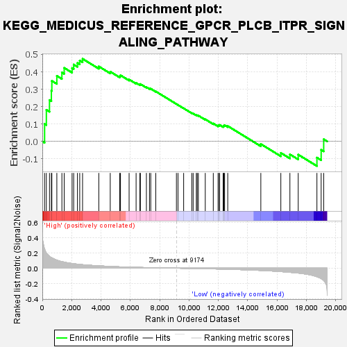
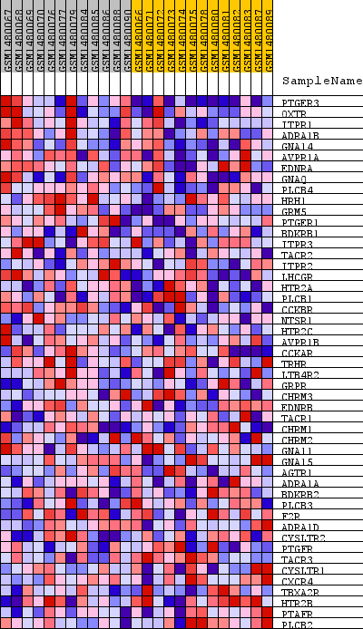
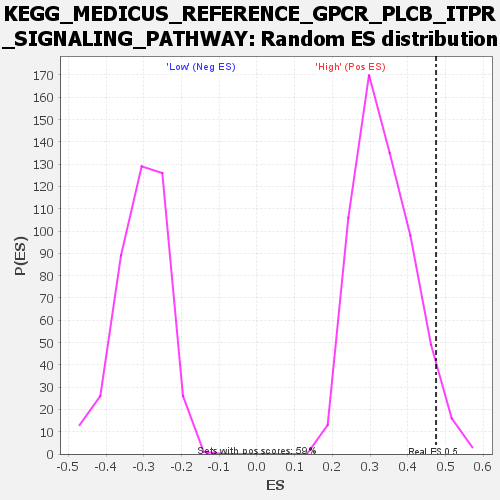

| Dataset | WG6v3.MRPL3.cls#High_versus_Low.MRPL3.cls#High_versus_Low_repos |
| Phenotype | MRPL3.cls#High_versus_Low_repos |
| Upregulated in class | High |
| GeneSet | KEGG_MEDICUS_REFERENCE_GPCR_PLCB_ITPR_SIGNALING_PATHWAY |
| Enrichment Score (ES) | 0.47490263 |
| Normalized Enrichment Score (NES) | 1.4077163 |
| Nominal p-value | 0.044067796 |
| FDR q-value | 0.5993895 |
| FWER p-Value | 1.0 |

| SYMBOL | TITLE | RANK IN GENE LIST | RANK METRIC SCORE | RUNNING ES | CORE ENRICHMENT | |
|---|---|---|---|---|---|---|
| 1 | PTGER3 | PTGER3 | 155 | 0.247 | 0.1003 | Yes |
| 2 | OXTR | OXTR | 274 | 0.199 | 0.1815 | Yes |
| 3 | ITPR1 | ITPR1 | 488 | 0.154 | 0.2379 | Yes |
| 4 | ADRA1B | ADRA1B | 616 | 0.137 | 0.2915 | Yes |
| 5 | GNA14 | GNA14 | 649 | 0.133 | 0.3481 | Yes |
| 6 | AVPR1A | AVPR1A | 989 | 0.105 | 0.3768 | Yes |
| 7 | EDNRA | EDNRA | 1334 | 0.085 | 0.3963 | Yes |
| 8 | GNAQ | GNAQ | 1490 | 0.079 | 0.4229 | Yes |
| 9 | PLCB4 | PLCB4 | 2028 | 0.061 | 0.4219 | Yes |
| 10 | HRH1 | HRH1 | 2137 | 0.058 | 0.4419 | Yes |
| 11 | GRM5 | GRM5 | 2394 | 0.052 | 0.4515 | Yes |
| 12 | PTGER1 | PTGER1 | 2550 | 0.049 | 0.4649 | Yes |
| 13 | BDKRB1 | BDKRB1 | 2743 | 0.045 | 0.4749 | Yes |
| 14 | ITPR3 | ITPR3 | 3850 | 0.030 | 0.4311 | No |
| 15 | TACR2 | TACR2 | 4630 | 0.023 | 0.4009 | No |
| 16 | ITPR2 | ITPR2 | 5277 | 0.018 | 0.3753 | No |
| 17 | LHCGR | LHCGR | 5328 | 0.017 | 0.3802 | No |
| 18 | HTR2A | HTR2A | 5916 | 0.014 | 0.3560 | No |
| 19 | PLCB1 | PLCB1 | 6393 | 0.011 | 0.3362 | No |
| 20 | CCKBR | CCKBR | 6650 | 0.010 | 0.3273 | No |
| 21 | NTSR1 | NTSR1 | 6685 | 0.010 | 0.3298 | No |
| 22 | HTR2C | HTR2C | 7095 | 0.008 | 0.3121 | No |
| 23 | AVPR1B | AVPR1B | 7304 | 0.007 | 0.3043 | No |
| 24 | CCKAR | CCKAR | 7392 | 0.007 | 0.3027 | No |
| 25 | TRHR | TRHR | 7733 | 0.005 | 0.2874 | No |
| 26 | LTB4R2 | LTB4R2 | 9142 | 0.000 | 0.2148 | No |
| 27 | GRPR | GRPR | 9250 | -0.000 | 0.2094 | No |
| 28 | CHRM3 | CHRM3 | 9635 | -0.002 | 0.1902 | No |
| 29 | EDNRB | EDNRB | 10190 | -0.003 | 0.1632 | No |
| 30 | TACR1 | TACR1 | 10283 | -0.004 | 0.1601 | No |
| 31 | CHRM1 | CHRM1 | 10499 | -0.005 | 0.1510 | No |
| 32 | CHRM2 | CHRM2 | 10558 | -0.005 | 0.1502 | No |
| 33 | GNA11 | GNA11 | 10638 | -0.005 | 0.1484 | No |
| 34 | GNA15 | GNA15 | 11108 | -0.007 | 0.1272 | No |
| 35 | AGTR1 | AGTR1 | 11655 | -0.009 | 0.1029 | No |
| 36 | ADRA1A | ADRA1A | 11984 | -0.010 | 0.0906 | No |
| 37 | BDKRB2 | BDKRB2 | 12009 | -0.011 | 0.0939 | No |
| 38 | PLCB3 | PLCB3 | 12090 | -0.011 | 0.0946 | No |
| 39 | F2R | F2R | 12327 | -0.012 | 0.0876 | No |
| 40 | ADRA1D | ADRA1D | 12376 | -0.012 | 0.0905 | No |
| 41 | CYSLTR2 | CYSLTR2 | 12427 | -0.013 | 0.0934 | No |
| 42 | PTGFR | PTGFR | 12641 | -0.014 | 0.0884 | No |
| 43 | TACR3 | TACR3 | 14897 | -0.029 | -0.0152 | No |
| 44 | CYSLTR1 | CYSLTR1 | 16261 | -0.044 | -0.0662 | No |
| 45 | CXCR4 | CXCR4 | 16879 | -0.053 | -0.0746 | No |
| 46 | TBXA2R | TBXA2R | 17446 | -0.063 | -0.0761 | No |
| 47 | HTR2B | HTR2B | 18721 | -0.111 | -0.0932 | No |
| 48 | PTAFR | PTAFR | 19010 | -0.136 | -0.0484 | No |
| 49 | PLCB2 | PLCB2 | 19183 | -0.159 | 0.0123 | No |

